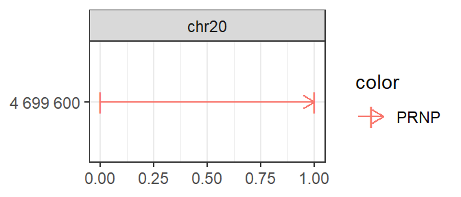
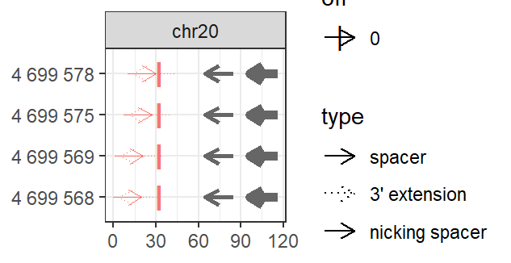

Prime Editing
Aditya M Bhagwat
2020-09-06
prime_editing.RmdBackground
Crispr/Cas9 is a prokaryotic immune system turned into a genome engineering tool, with a Cas9/gRNA complex at the heart of its functioning. The gRNA (guide RNA) contains a 20 nucleotide (proto)spacer which guides the complex to a genomic locus with identical sequence, but only when followed by an NGG PAM (protospacer adjacent motif (see Figure 1A). The Cas9 enzyme performs some effector action at that locus: wildtype Cas9 cuts both strands after spacer nucleotide 17, Cas9Nickase cuts only a single strand (two variants exist, cutting respectively each of the strands), while catalytically dead dCas9, fused to some effector domain (KRAB, VPR, APEX) performs some alternative action (e.g. KRAB represses, VPR activates, APEX biotinylates).
Prime Editing (Anzalone et al., 2019) extends this further, by coupling Cas9 to a Reverse Transcriptase (RT). As shown in Figure 1, the guide RNA is extended with a 3’ extension that contains primer binding site (binding a complementary DNA region that acts as a primer for reverse transcription) and reverse transcription template (the template used for reverse transcription). The spacer still acts as targeting agent, guiding the Cas9/RT complex to targeted genomic locus.

gRNAs for Crispr/Cas9 (A) and Prime Editing
Guide RNA design involves finding good guide RNAs to hit the targets of interest. Plasmids with guide RNA scaffolds, ready for cloning desired spacers into, can be readily ordered from AddGene. The actual task, therefore, boils down to finding good spacers for the targets of interest. For prime editing, it additionally involves finding appropriate primer binding site and reverse transcription template to edit the target site of interest. In general, a good spacer needs to fulfill two requirements:
-
Minimal off-target (mis)matches, so that only intended targets are hit.
- Crispr gRNAs can hit exact (with identical and alternate NGG pam), as well as (up-to 3) mismatch offtargets.
- Prime Editing is much more specific, hitting only exact offtargets.
Maximal on-target efficiency. Over the years, several sequence-to-efficiency prediction models have been developed, of which the Doench 2016 score has currently become the community standard. The score is not perfect, and examples can be found where the prediction and the actual outcome differ. Yet, to-date it is the best heuristic to predict on-target efficiency, worth making use of.
Multicrispr
Multicrispr was developed to make guide RNA design easier. As shown below, it contains functions to define and transform targets, find spacers, compute/add offtarget counts and efficiency scores (Doench 2016), and finally return all of this as a GRanges object.

Install
Installing multicrispr is simple:
# From BioC install.packages("BiocManager") BiocManager::install(version='devel') BiocManager::install("multicrispr") # From gitlab: #url <- 'https://gitlab.gwdg.de/loosolab/software/multicrispr.git' #remotes::install_git(url, repos = BiocManager::repositories())
Doench et al. (2016) ’s python package azimuth for on-target efficiency prediction using their method can be easily installed and activated using reticulate:
# Install once # reticulate::conda_create('azienv', 'python=2.7') # reticulate::conda_install('azienv', 'azimuth', pip = TRUE) # reticulate::conda_install('azienv', 'scikit-learn==0.17.1', pip = TRUE) # Then activate reticulate::use_condaenv('azienv')
Bowtie-indexed genomes for quick offtarget analysis can be installed using index_genome. For the two genomes used in the examples, mm10 and hg38, the functions downloads pre-build indexes from our data server, allowing a quick exploration (set download=FALSE to build index anew):
index_genome(BSgenome.Mmusculus.UCSC.mm10::BSgenome.Mmusculus.UCSC.mm10) index_genome(BSgenome.Hsapiens.UCSC.hg38::BSgenome.Hsapiens.UCSC.hg38 )
Define targets
bed_to_granges converts a (0-based) BED coordinate file into a (1-based) GRanges.
genes_to_granges and genefile_to_granges convert entrez/ensembl gene identifiers into GRanges using txdb gene models. char_to_granges uses a 1-based coordinate vector to specify the GRanges. It can be used to prime edit the prion disease locus in the PRNP gene (Anzalone et al., 2019)
# char_to_granges: Anzalone et al. (2019) prime editing targets require(multicrispr) ## Lade nötiges Paket: multicrispr bsgenome <- BSgenome.Hsapiens.UCSC.hg38::BSgenome.Hsapiens.UCSC.hg38 targets <- char_to_granges(c(PRNP = 'chr20:4699600:+'), bsgenome) plot_intervals(targets)

Find prime editing spacers and nicking spacers
find_primespacers finds prime editing spacers, 3’ extensions and nicking spacers. For both, on- and off-target analysis is performed. Desired edits are always to be specified with respect to the defauylt (+) strand.
spacers <- find_primespacers(targets, bsgenome=bsgenome, edits = "T")

Return spacer GRanges
str(gr2dt(spacers), vec.len=2) ## Classes 'data.table' and 'data.frame': 4 obs. of 27 variables: ## $ seqnames : Factor w/ 595 levels "chr1","chr2",..: 20 20 20 20 ## $ start : int 4699568 4699569 4699575 4699578 ## $ end : int 4699587 4699588 4699594 4699597 ## $ width : int 20 20 20 20 ## $ strand : Factor w/ 3 levels "+","-","*": 1 1 1 1 ## $ targetname : chr "PRNP" "PRNP" ... ## $ targetstart : int 4699600 4699600 4699600 4699600 ## $ targetend : int 4699600 4699600 4699600 4699600 ## $ crisprname : chr "PRNP_1" "PRNP_2" ... ## $ crisprspacer : chr "AGCAGCTGGGGCAGTGGTGG" "GCAGCTGGGGCAGTGGTGGG" ... ## $ crisprpam : chr "GGG" "GGG" ... ## $ crisprprimer : chr "GCTGGGGCAGTGG" "CTGGGGCAGTGGT" ... ## $ crisprtranscript: chr "TGGGGGGCCTTGGCGT" "GGGGGGCCTTGGCGTC" ... ## $ crisprextension : chr "ACGCCAAGGCCCCCCACCACTGCCCCAGC" "GACGCCAAGGCCCCCCACCACTGCCCCAG" ... ## $ crisprextrange : chr "chr20:4699572-4699600:-" "chr20:4699573-4699601:-" ... ## $ off : num 0 0 0 0 ## $ off0 : num 0 0 0 0 ## $ Doench2014 : num 0.00995 0.04497 ... ## $ nickrange : chr "chr20:4699632-4699651:-;chr20:4699633-4699652:-;chr20:4699664-4699683:-" "chr20:4699632-4699651:-;chr20:4699633-4699652:-;chr20:4699664-4699683:-" ... ## $ nickspacer : chr "TCACTGCCGAAATGTATGAT;GTCACTGCCGAAATGTATGA;GCATGTTTTCACGATAGTAA" "TCACTGCCGAAATGTATGAT;GTCACTGCCGAAATGTATGA;GCATGTTTTCACGATAGTAA" ... ## $ nickpam : chr "GGG;TGG;CGG" "GGG;TGG;CGG" ... ## $ nickoff : chr "0;0;0" "0;0;0" ... ## $ nickoff0 : chr "0;0;0" "0;0;0" ... ## $ nickoff1 : chr "0;0;0" "0;0;0" ... ## $ nickoff2 : chr "0;0;0" "0;0;0" ... ## $ nickDoench2014 : chr "0.14;0.32;0.52" "0.14;0.32;0.52" ... ## $ names : chr "PRNP_1" "PRNP_2" ... ## - attr(*, ".internal.selfref")=<externalptr>
References
Anzalone, A.V., Randolph, P.B., Davis, J.R. et al. Search-and-replace genome editing without double-strand breaks or donor DNA. Nature 576, 149–157 (2019). https://doi.org/10.1038/s41586-019-1711-4
Doench et al. (2016). Optimized sgRNA design to maximize activity and minimize off-target effects of CRISPR-Cas9. Nature Biotechnology, 34(7), doi:10.1038/nbt.3437